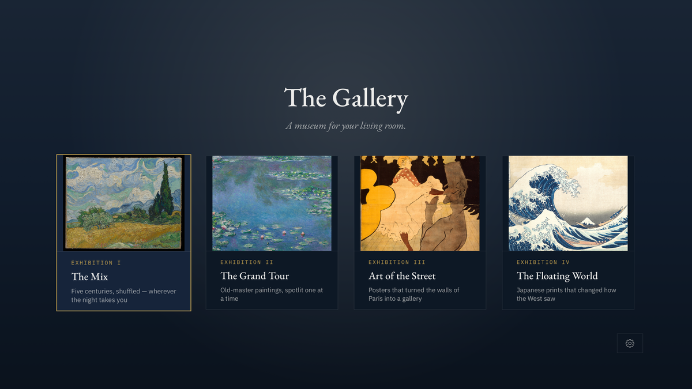

Exhibitions, not a slideshow.
Pick a room and walk through it: The Grand Tour hangs the old masters; Art of the Street hangs the poster art of the Belle Époque; The Floating World hangs Japanese woodblock prints; The Mix shuffles the whole collection.
Each work hangs spotlit with its placard beneath. The room moves on when the music ends, or you walk at your own pace with the remote. Select the placard and the screen gives you the full curatorial story — who made it, what world it was made in, and why this music hangs beside it. Pause, linger, go back. There is no autoplay rabbit hole and nothing to binge; it is a room, not a feed.

The Pairing
Every artwork hangs with music from its own moment — Hokusai with the shamisen, the Moulin Rouge with the café-concert — so the work is met in its world, not ours.